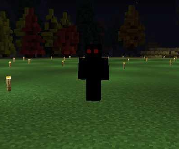

Anomalia T-011
T-011, informalmente denominada “A Biblioteca Infinita” ou “Biblioteca de Babel”, é uma anomalia classificada como um local anômalo de extensão infinita. Trata-se do primeiro registro da A.F.A de uma anomalia que não se manifesta como entidade ou objeto, mas como um espaço físico completo e autossustentável.
Descrição Geral
A Biblioteca de Babel apresenta uma estrutura aparentemente infinita, composta por salas idênticas que se repetem independentemente da distância percorrida. Não há variações estruturais significativas ao longo do ambiente, reforçando sua natureza não euclidiana.
O acesso à anomalia ocorre exclusivamente por meio de um convite formal emitido pela própria T-011. O conteúdo do convite é padronizado e apresenta extensas censuras, sempre evitando mencionar diretamente o nome da anomalia.
“Caros trabalhadores da A.F.A, através deste convite, convido dois de vocês a [CENSURADO]. Ao chegarem ao local, perderão toda forma de contato com o mundo exterior. Sua única forma de comunicação será através de nosso intermediador. Assinado: [CENSURADO]”
As censuras foram confirmadas como um mecanismo ativo da própria anomalia, que se refere a si mesma apenas por designações censuradas ou pelo código T-011.
---Entidade Associada — T-011-1 (O Intermediador)
T-011-1, conhecido como “O Intermediador”, é uma entidade humanoide completamente negra, desprovida de qualquer detalhe físico além de dois olhos vermelhos luminosos.
Após a aceitação do convite, T-011-1 manifesta-se próximo aos indivíduos selecionados. Quando os mesmos declaram estar preparados, a entidade provoca o desaparecimento simultâneo de si mesma e dos convidados, realizando a transferência direta para o interior da Biblioteca.
---Estrutura Interna da Biblioteca
O interior de T-011 é composto por salas octogonais interconectadas, cada uma contendo:
- Estantes de livros dispostas ao longo das paredes;
- Oito portas, ligando a sala às células adjacentes;
- Dois níveis verticais, conectando os andares superiores e inferiores.
A sala inicial diferencia-se das demais por conter uma rosa dos ventos entalhada em madeira no centro do piso, utilizada como ponto de orientação inicial.
Ao ingressar na Biblioteca pela primeira vez, os indivíduos recebem automaticamente:
- Um mapa com coordenadas que se atualizam em tempo real;
- Uma bússola funcional, cuja origem permanece desconhecida.
T-011 manifesta características típicas de um espaço liminal, induzindo sentimentos prolongados de isolamento, desconforto e perda de referência temporal. Uma música ambiente suave é constantemente percebida, ecoando de maneira difusa pelos salões.
---Entidades Hostis — T-011-2 (Fantasmas de Babel)
Apesar da impressão inicial de isolamento completo, T-011 abriga entidades hostis conhecidas como “Fantasmas de Babel”. Essas entidades vagam continuamente pelos corredores da Biblioteca, perseguindo qualquer indivíduo presente.
Foram registradas nove variantes distintas, classificadas por coloração e comportamento.
Variante Branca
A manifestação mais comum. Persegue alvos constantemente, atravessa paredes e causa dano físico elevado ao contato.
Variante Preta
Semelhante à variante branca, porém, além do dano físico, provoca cegueira temporária ao contato.
Variante Amarela
Apresenta velocidade significativamente superior às demais variantes, porém causa dano físico reduzido.
Variante Verde
Além de dano físico, imobiliza o alvo através de ectoplasma, reduzindo drasticamente sua mobilidade.
Variante Azul Claro
Ao contato, paralisa completamente o indivíduo por aproximadamente 30 segundos.
Variante Roxa
Induz tontura severa e provoca movimentos involuntários descontrolados.
Variante Azul Escuro
Combina cegueira temporária (15 segundos) com movimentos involuntários forçados.
Variante Vermelha
Elimina o alvo instantaneamente, resultando no retorno imediato ao ponto inicial da Biblioteca.
Variante Vinho
A mais rara registrada. Não elimina fisicamente o indivíduo, mas o apaga completamente dos registros da Biblioteca e da história conhecida, como se nunca tivesse existido.
---Entidade Adicional — T-011-3 (A Sombra)
T-011-3, conhecida como “A Sombra”, manifesta-se como uma massa de fumaça densa e instável. A entidade surge periodicamente e inicia perseguição lenta ao alvo.
Durante sua aproximação, emite um ruído semelhante a estática, aumentando progressivamente sua velocidade. Ao contato, causa dano físico severo, suficiente para deixar o indivíduo à beira da morte.
---Limites da Biblioteca
É possível ultrapassar os limites convencionais da Biblioteca utilizando as coordenadas fornecidas. No entanto, tais ações acarretam efeitos progressivamente hostis:
- Após 5.000 unidades: o ambiente escurece e a música torna-se perturbadora.
- Após 10.000 unidades: vozes começam a sussurrar mensagens alertando que o indivíduo não deveria estar ali; o ambiente adquire coloração avermelhada.
- Após 50.000 unidades: ocorre apagão total. Nenhuma forma de visão é possível a partir desse ponto.
Saída e Contenção
A única forma conhecida de escapar de T-011 é através de uma porta anômala que pode surgir aleatoriamente em qualquer sala da Biblioteca. A probabilidade de sua manifestação é extremamente baixa.
Devido à raridade desse evento, a entrada na Biblioteca de Babel é considerada, na maioria dos casos, uma sentença de confinamento indefinido.

Nomenclatura: T-011
Apelido: Biblioteca de Babel
Nível de Perigo: WAW
Mais imagens relacionadas a anomalia:
